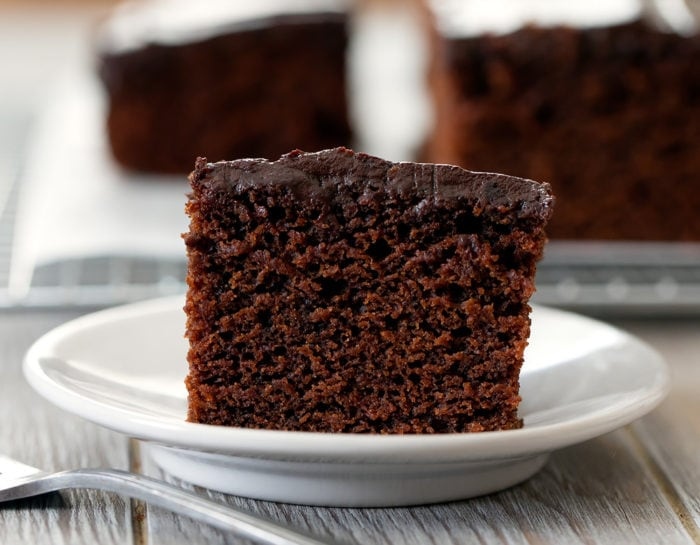

Chocolate Cake
Home

Description
Chocolate cake is favorite dessert choice for many people. It's a flavor of cake that is really, really
chocolatey. You can even choose to put chocolate chips and sometimes even chocolate icing. It tastes best when
it's are fresh out of the oven but it's are a delicious treat that can last for days.
Ingredients
- All-purpose flour (2.5 cups)
- White sugar (2.5 cups)
- Cocoa powder (1 cup)
- Baking powder (1 teaspoon)
- Baking soda (0.5 teaspoon)
- Salt (1 teaspoon)
- Milk (2.75 cups)
- Grapeseed oil (0.75 cups)
- Apple cider vinegar (2 tablespoons)
- Vanilla extract (1 tablespoon)
Steps
- Preheat the oven to 350° F or 180° C, and then lightly grease a cake pan.
- In a large bowl, whisk together the flour, sugar, cocoa powder, baking powder, baking soda, and salt
until they are well-mixed and uniform.
- In another bowl, whisk together the milk, oil, vinegar, and vanilla extract. Slowly pour this
wet mixture into the dry ingredients bowl, and start mixing until all lumps are gone and there is a smooth,
thick batter.
- Pour the batter into the cake pan evenly, and once the over has preheated place it into it for about 40 minutes.
- Let it cool off for 5 to 10 minutes and enjoy!